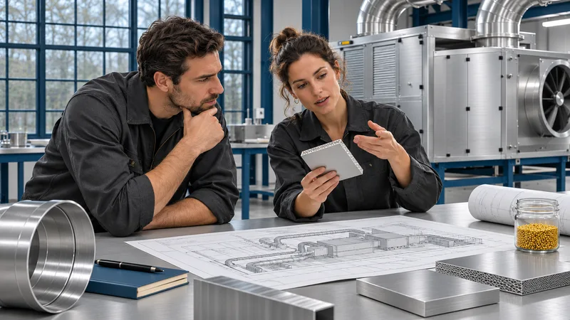
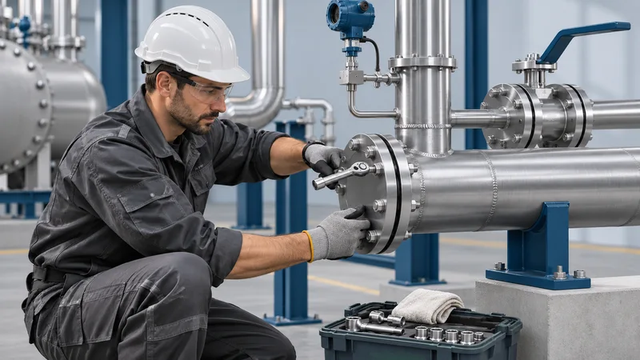

Industriële luchttechniek
Schone, veilige en efficiënte luchtoplossingen voor uw proces.


Grip op elke stroom.
Pneumatisch transport van poeders en granulaten, van losse component tot complete procesinstallatie.
Schone, veilige en efficiënte luchtoplossingen voor uw proces.
Betrouwbaar en gecontroleerd omgaan met poeders en granulaten.

Eén technisch aanspreekpunt voor uw proces.

[TBD]
[TBD]

Een doordacht en praktisch ontwerp, passend bij uw situatie. We vertalen uw procesvraag naar een veilige, efficiënte en realiseerbare installatie.
We bepalen de beste technische oplossing, met oog voor prestaties, inpassing en onderhoud.
Bespreek uw engineeringvraag
[TBD]
[TBD]

[TBD]
[TBD]

Ja. U kunt bij ons terecht voor losse componenten én complete procesinstallaties. We adviseren welk component bij uw toepassing past.
[TBD]
[TBD]
[TBD]
Vertel ons wat u verwerkt en wat u wilt bereiken.
We hebben uw bericht ontvangen en nemen contact met u op.